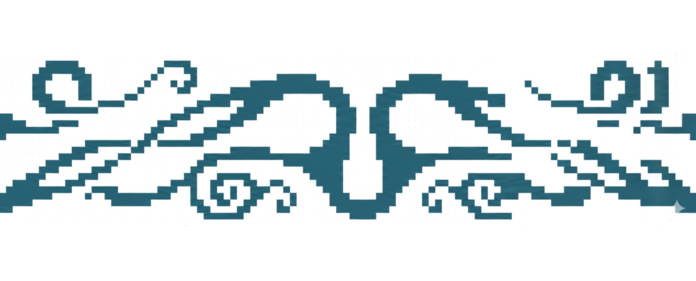

Soy creadora digital con enfoque en diseño, dirección de arte e instalaciones interactivas.
Me interesa explorar el cruce entre lo visual, lo sensorial y lo emocional, desarrollando experiencias que integran tecnología y estética.
Trabajo con diseño web, interacción touch y mapping, mi busqueda consiste crear experiencias y atmosferas sensibles donde lo visual y lo digital se cruzan
Este espacio funciona como archivo y laboratorio de esos mundos en proceso.
Proyeccion en el festival livelooping. Puente portal. 2026
Proyeccion aerea. Avion. 2025
Muestra acrobacias sobre telas . El arte de volar. 2025